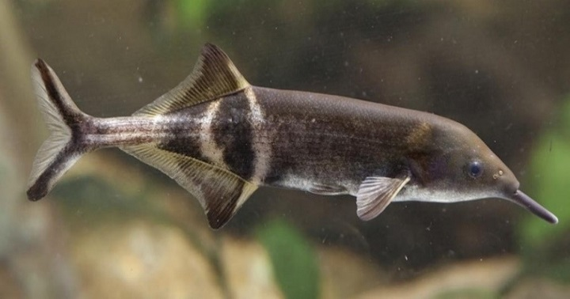
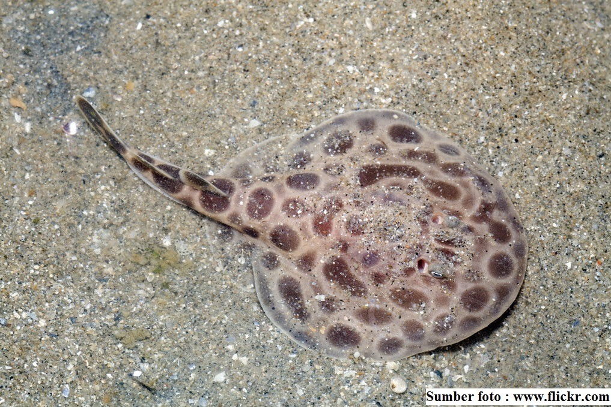
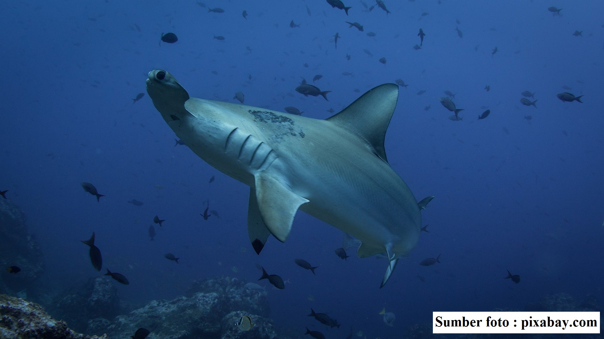
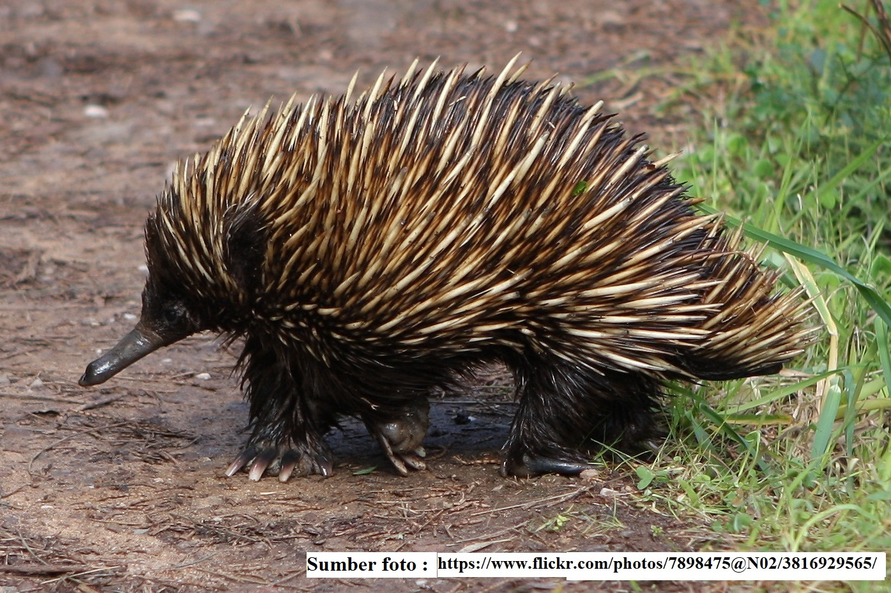
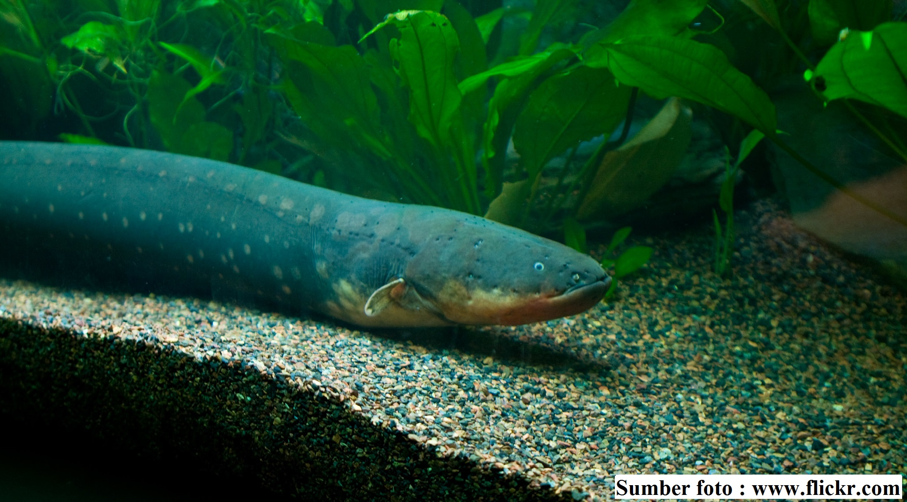
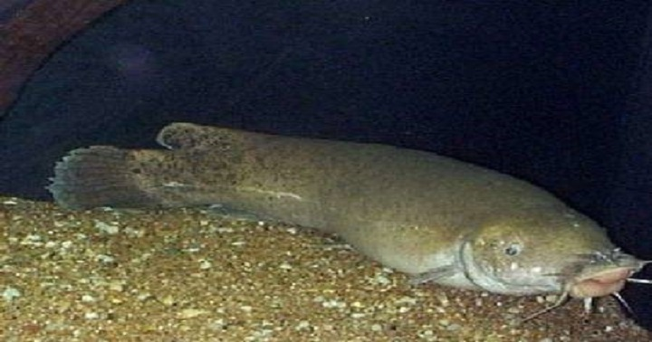

Seperti manusia, hewan juga menghasilkan listrik sebagai impuls rangsang dalam tubuhnya untuk menanggapi rangsangan, bergerak, berburu mangsa, melawan predator, atau bahkan navigasi. Pada umumnya arus listrik yang dihasilkan sangat lemah, tetapi ada beberapa hewan yang mampu menghasilkan arus listrik yang sangat kuat. Hewan apa sajakah yang mampu menghasilkan arus listrik yang kuat, berikut hewan yang dapat menghasilkan arus listrik.
Ikan Belalai Gajah

Ikan ini memiliki mulut yang panjang menyerupai bentuk belalai gajah dan ikan ini dilengkapi dengan organ khusus, yang disusun oleh ribuan sel electroplax pada bagian ekor yang mampu menghasilkan listrik statis bertegangan tinggi. Sel electroplax merupakan sel yang menghasilkan muatan negatif pada bagian dalam dan muatan positif pada bagian luar saat ikan belalai gajah dalam keadaan beristirahat. Arus listrik akan muncul pada saat otot ikan berkontraksi dan pada saat yang bersamaan ikan mampu mendeteksi keberadaan predator dan mangsa.
Ikan Pari

Ikan pari listrik mampu mengendalikan tegangan listrik yang ada pada tubuhnya. Kedua sisi kepala ikan pari listrik mampu menghasilkan listrik hingga sebesar 220 volt.
Hiu Kepala Martil

Hiu kepala martil memiliki ratusan ribu elektroreseptor atau sel penerima rangsang listrik. Hiu kepala martil mampu menerima sinyal listrik hingga setengah miliar volt. Hiu kepala martil biasa menggunakan kemampuan mendeteksi sinyal listrik untuk mengetahui letak mangsa di bawah pasir, menghindari keberadaan predator, dan untuk mendeteksi arus laut yang bergerak sesuai medan magnet bumi.
Echidna

Echidna memiliki moncong memanjang yang berfungsi sebagai pengirim sinyal-sinyal listrik untuk menemukan serangga (mangsa). Elektroreseptor echidna terus menerus dibasahi agar lebih mudah untuk menghantarkan listrik. Hal inilah yang menyebabkan kebanyakan hewan yang memiliki sistem elektroreseptor berasal dari perairan.
Belut Listrik

Penelitian menunjukkan bahwa belut listrik dapat menghasilkan kejutan tanpa lelah selama satu jam. Besarnya jumlah energi listrik yang dihasilkan diyakini dapat menyebabkan kematian pada manusia dewasa.
Lele Listrik

Lele air tawar yang berasal dari perairan tropis di Afrika ini memiliki kemampuan untuk menghasilkan listrik hingga sebesar 350 volt.
❮
❯